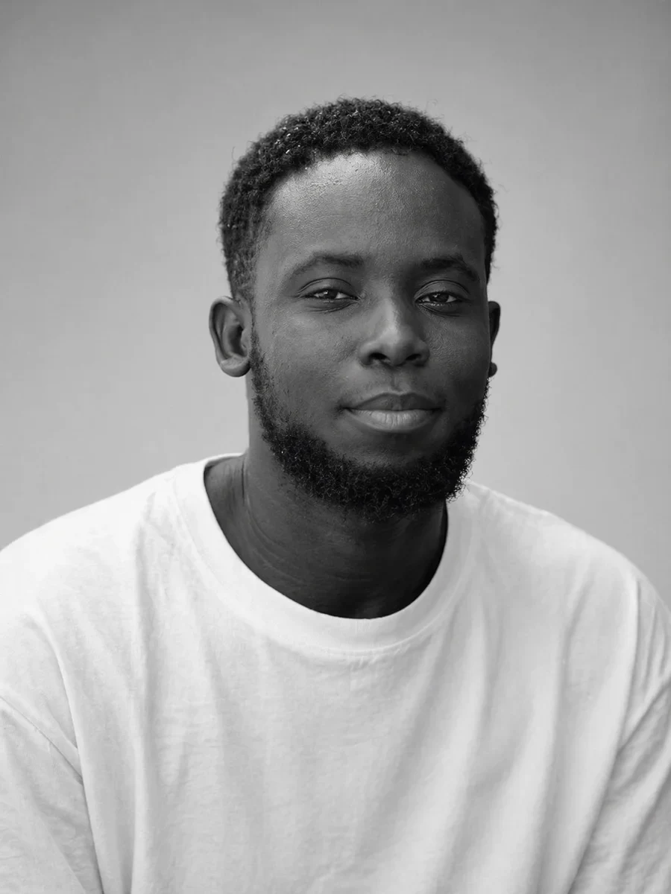

ZANNOUJohmion Dieudonné Michaïah
Des interfaces cousues pour les gens d’ici.

Profil
Designer UI/UX et graphiste formé en Internet et Multimédia à l’IFRI. Je conçois des applications, des plateformes web, des affiches et des identités visuelles qui partent des usages réels au Bénin : WhatsApp, Mobile Money, langues nationales, faible connexion.
Expérience
- 8 applications et plateformes maquettées de bout en bout sur Figma, de la recherche au prototype.
- 27 affiches et visuels réseaux sociaux : lancements, formations, food, mode, événements.
- 8 identités visuelles : Africonex Studio, CXDRXC, CEO, DDStore, Huɛkpɔ, NID — Incubateur, ZAK Studio, MKD Deal Office.
- Mise en page de magazines imprimés : Vodun Days, Octobre rose et Octobre bleu.
Projets sélectionnés
Assistant WhatsApp multilingue pour les démarches administratives.
Plateforme du festival de Ouidah et magazine imprimé.
Marketplace d’art béninois, billetterie QR, Mobile Money.
Plateforme multiservice : achat, location, lavage, streaming.
Liens de paiement multi-vendeurs, Mobile Money et carte.
Application d’orientation scolaire avec test et fiches métiers.
Portefeuille de documents, connexion NPI, partage QR.
Application de révision avec quiz IA, projet de groupe.
Savoir-faire
« Je dessine d’abord pour la personne qui a le moins de temps, le moins de data et le moins de patience. »